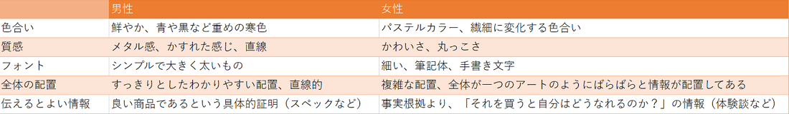

【分析】ターゲットの性別に合わせたデザイン
使用ツール(バナー作成)：Photoshop 男性をターゲットにしたバナー こだわり 女性をターゲットにしたバナー こだわり
効果的なWEBデザインを行うため、ターゲットの性別に応じたデザインの在り方を分析・考察し表にまとめました。
分析方法は主に、ターゲットの性別がわかりやすいさまざまなバナーやWEBサイトを見て共通点を考察するといったものです。

これらの分析から、男女別に効果的な自動車のバナーをデザインしました。
・黒や濃い青など、男性に好まれやすい色を使用
・はっきりとしたフォント
・商品の良さを伝える具体的な根拠
・直線的でわかりやすい配置
・パステルカラーをメインに使用
・繊細なフォント
・丸みのある配置
・カラーバリエーションのアピール